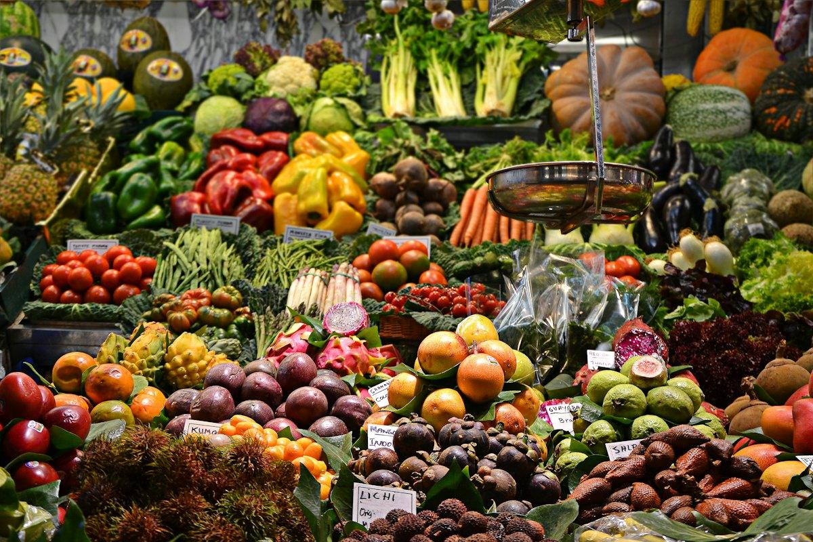
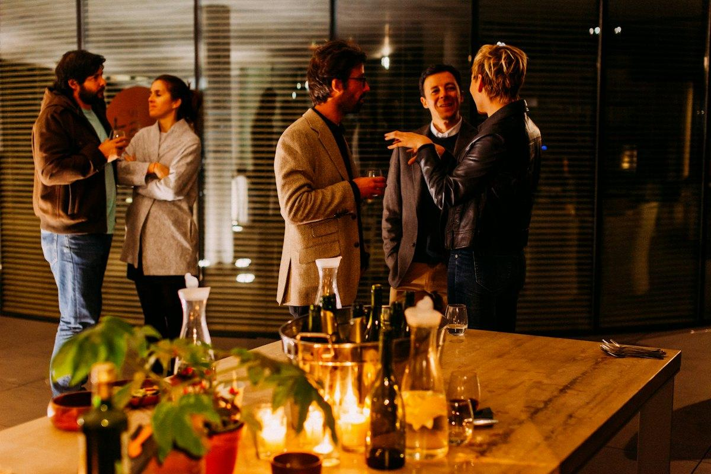

GRAMMAIRE · LA VIE DE TOUS LES JOURS
Je me lève, je le connais, je lui téléphoneLes verbes pronominaux et les pronoms compléments
Bonjour Penka !
Aujourd'hui, tu apprends les verbes pronominaux (je me lève, nous nous connaissons) et les pronoms compléments (le, la, les, lui, leur, y, en) pour parler sans répéter les mots. Après chaque règle, tu t'entraînes, puis tu parles beaucoup : de ta journée, de ta famille, de ton travail.
Today, you learn reflexive verbs and object pronouns, so you can speak without repeating words. After each rule, you practise, then you talk a lot: about your day, your family, your work.
▶ Clique pour écouter. Répète la phrase à voix haute.
Click to listen. Repeat the sentence out loud.
EN : la traduction en anglais. Essaie d'abord sans !
The English translation. Try without it first!
🗣️ Dans « À toi de parler », les débuts de phrase t'aident. Clique dessus pour les écouter.
In “À toi de parler”, the sentence starters help you. Click them to listen.
★ À la fin, « Mes phrases utiles » et « À revoir » t'aident à réviser à la maison.
At the end, “Mes phrases utiles” and “À revoir” help you revise at home.
1
Les verbes pronominaux
Reflexive verbs: se lever, se coucher, s'amuser…
Le verbe + son petit pronom
The verb + its small pronoun
Ces verbes ont un petit pronom devant : me, te, se, nous, vous, se. Il change avec la personne.
These verbs have a small pronoun in front: it changes with the person.
Je me couche tôt.
I go to bed early.
Tu te couches tard.
You go to bed late.
Il se couche à dix heures.
He goes to bed at ten.
Nous nous couchons à minuit.
We go to bed at midnight.
Vous vous couchez à onze heures.
You go to bed at eleven.
Ils se couchent à huit heures.
They go to bed at eight.
Réfléchi : sur soi-même
Je fais l'action sur moi.
I do the action to myself.
Je couche ma fille, puis je me couche.
I put my daughter to bed, then I go to bed.
Je me lave. Il se rase.
I wash. He shaves.
Réciproque : l'un l'autre
Deux personnes ou plus, l'une avec l'autre.
Two or more people, each other.
Nous nous connaissons bien.
We know each other well.
Les enfants se disputent.
The children argue with each other.
Des verbes à apprendre
se promener, s'arrêter, s'amuser, s'ennuyer, se tromper, s'intéresser à, s'occuper de, se moquer de, se souvenir de, s'améliorer
to go for a walk, to stop, to have fun, to be bored, to make a mistake, to be interested in, to take care of, to make fun of, to remember, to improve
Je me promène et je m'arrête devant les vitrines.
I go for a walk and stop in front of the shop windows.
➖ La négation
ne + pronom + verbe + pas : on garde le bloc ensemble.
“ne” + pronoun + verb + “pas”: keep the block together.
Je ne me lève pas tôt le dimanche.
I don't get up early on Sundays.
Nous ne nous connaissons pas.
We don't know each other.
1
VERBES PRONOMINAUX
Clique ou écris (le pronom + le verbe).
Click or write (the pronoun + the verb).
1
Le matin, je ______ lève à six heures et demie.
In the morning, I get up at half past six.
✓ Le matin, je me lève à six heures et demie.
2
Mes enfants ______ couchent à neuf heures.
My children go to bed at nine.
✓ Mes enfants se couchent à neuf heures.
3
Mon mari et moi, nous ______ promenons le dimanche.
My husband and I go for a walk on Sundays.
✓ Mon mari et moi, nous nous promenons le dimanche.
4
« Je couche ma fille » ou « je me couche » : pour dire I go to bed…
To say “I go to bed”…
✓ Je me couche : je fais l'action sur moi.
5
La bonne négation :
The correct negative:
✓ Je ne me trompe pas.
6
Est-ce que vous (s'intéresser) à la politique ?
Are you interested in politics?
✓ Est-ce que vous vous intéressez à la politique ?
🗣️ À toi de parler !
Réponds à voix haute avec une phrase complète. Les débuts de phrase t'aident : clique pour les écouter. Puis compare avec l'exemple.
Answer out loud with a full sentence. The sentence starters help you: click to listen. Then compare with the example.
1
Raconte ta routine du matin, du réveil jusqu'au bureau.
Describe your morning routine, from waking up to the office.
Pour t'aider :
Exemple de réponse
Je me réveille à six heures et demie, mais je me lève à sept heures. Je me prépare, je m'habille et je me dépêche pour prendre le bus.
I wake up at half past six, but I get up at seven. I get ready, I get dressed and I hurry to catch the bus.
2
Et tes enfants, le matin ? Est-ce qu'ils se lèvent facilement ? Est-ce qu'ils se disputent ?
And your children in the morning? Do they get up easily? Do they argue?
Pour t'aider :
Exemple de réponse
Mes enfants ne se lèvent pas facilement ! Parfois, ils se disputent pour la salle de bains.
My children don't get up easily! Sometimes they argue over the bathroom.
3
Toi et ton mari, depuis quand vous vous connaissez ? Où est-ce que vous vous êtes rencontrés ?
You and your husband, how long have you known each other? Where did you meet?
Pour t'aider :
Exemple de réponse
Nous nous connaissons depuis vingt ans. Nous nous sommes rencontrés à l'université, en Bulgarie.
We have known each other for twenty years. We met at university, in Bulgaria.
4
À quoi est-ce que tu t'intéresses ? Quand est-ce que tu t'ennuies ?
What are you interested in? When do you get bored?
Pour t'aider :
Exemple de réponse
Je m'intéresse à la cuisine et aux voyages. Je m'occupe beaucoup de mes enfants. Je m'ennuie quand il pleut tout le week-end.
I'm interested in cooking and travelling. I look after my children a lot. I get bored when it rains all weekend.
2
Les pronoms directs : le, la, les
Direct object pronouns: him, her, it, them
Qui ? Quoi ? → le, la, les
Who? What? → le, la, les
Ils remplacent un nom pour ne pas le répéter. Ils répondent à la question qui ? ou quoi ? (sans « à »). On les place devant le verbe.
They replace a noun so you don't repeat it. They answer “who?” or “what?” (no “à”). They go before the verb.
Je regarde le garçon. Je le regarde.
I look at him / it (masculine).
Je regarde la robe. Je la regarde.
I look at her / it (feminine).
Je regarde les enfants. Je les regarde.
I look at them.
Paul me regarde. Paul te regarde.
Paul looks at me. Paul looks at you.
Paul nous regarde. Paul vous regarde.
Paul looks at us. Paul looks at you.
Il m'écoute. Elle l'adore. Ils t'invitent.
Before a vowel: me → m', te → t', le / la → l'.
Pour une personne
Avec aimer et connaître : le, la, les.
With “aimer” and “connaître”: le, la, les.
Tu aimes Julie ? Oui, je l'aime.
Do you love Julie? Yes, I love her.
Tu connais son père ? Oui, je le connais.
Do you know his father? Yes, I know him.
Pour un objet
On dit plutôt ça, ou rien.
For things, say “ça”, or nothing.
Tu aimes le fromage ? Oui, j'aime ça.
Do you like cheese? Yes, I like it.
Tu connais le gorgonzola ? Oui, je connais.
Do you know gorgonzola? Yes, I do.
➖ La négation
Je ne le regarde pas.
I don't look at him.
Nous ne les connaissons pas.
We don't know them.
2
LE, LA, LES
Clique ou écris le bon pronom.
Click or write the right pronoun.
1
Tu prends le bus ? Oui, je ______ prends.
Do you take the bus? Yes, I take it.
✓ Oui, je le prends.
2
Tu fais les courses le samedi ? Oui, je ______ fais le samedi.
Do you do the shopping on Saturdays? Yes, I do it on Saturdays.
✓ Oui, je les fais le samedi.
3
Tu invites ta collègue ? Oui, je ______ invite.
Are you inviting your colleague? Yes, I'm inviting her.
✓ Oui, je l'invite.
4
Tu aimes le chocolat ? (un objet)
Do you like chocolate?
✓ Oui, j'aime ça.
5
Mon directeur ______ appelle souvent. (moi)
My boss often calls me.
✓ Mon directeur m'appelle souvent.
6
Tu connais les voisins ? Non, je ne connais pas.
Do you know the neighbours? No, I don't know them.
✓ Non, je ne les connais pas.
🗣️ À toi de parler !
Irène te pose des questions rapides. Réponds sans répéter le nom : utilise un pronom !
Irène asks you quick questions. Answer without repeating the noun: use a pronoun!
1
Tu regardes la télévision le soir ?
Do you watch TV in the evening?
Pour t'aider :
Exemple de réponse
Non, je ne la regarde pas souvent, je préfère lire.
No, I don't watch it often, I prefer reading.
2
Tu prépares le dîner tous les soirs ?
Do you make dinner every evening?
Pour t'aider :
Exemple de réponse
Oui, je le prépare presque tous les soirs, mais le week-end, c'est mon mari qui le prépare.
Yes, I make it almost every evening, but at the weekend my husband makes it.
3
Tu connais bien tes collègues ? Tu les invites chez toi ?
Do you know your colleagues well? Do you invite them home?
Pour t'aider :
Exemple de réponse
Je les connais bien, mais je ne les invite pas souvent chez moi. On se voit plutôt au restaurant.
I know them well, but I don't often invite them home. We usually meet at a restaurant.
4
Tu aimes la cuisine luxembourgeoise ? Et le fromage français ?
Do you like Luxembourgish food? And French cheese?
Pour t'aider :
Exemple de réponse
J'aime ça, surtout les gromperekichelcher ! Et le fromage français, j'adore ça.
I like it, especially potato fritters! And French cheese, I love it.
3
Les pronoms indirects : lui, leur
Indirect object pronouns: (to) him, (to) her, (to) them
À qui ? → lui, leur
To whom? → lui, leur
Ils remplacent à + une personne. Ils répondent à la question à qui ?
They replace “à + a person”. They answer “to whom?”
Je téléphone à mon père. Je lui téléphone.
I phone him.
Je téléphone à ma mère. Je lui téléphone.
I phone her.
Je téléphone à mes parents. Je leur téléphone.
I phone them.
Paul me parle, te parle, nous parle, vous parle.
me, te, nous, vous: the same as the direct pronouns!
⚠️ Lui et leur
lui = un homme ou une femme. leur = des hommes ou des femmes, et jamais de s.
“lui” is for a man or a woman; “leur” for several people, never with an “s”.
Je parle à Marie. Je lui parle.
I talk to her.
Surtout avec les verbes de communication + à :
Mainly with verbs of communication + à:
parler à
téléphoner à
écrire à
répondre à
demander à
prêter à
dire à
offrir à
sourire à
souhaiter à
Et aussi :
And also:
Sa fille lui ressemble. (ressembler à)
Her daughter looks like her.
Paris lui plaît. (plaire à)
He / she likes Paris.
Le rouge lui va bien. (aller à)
Red suits him / her.
💡 Penser à, s'intéresser à
Avec ces verbes, on garde à + lui, elle, eux après le verbe.
With these verbs, keep “à” + lui / elle / eux after the verb.
Je pense à lui. Je m'intéresse à elle.
I think about him. I'm interested in her.
➖ La négation
Je ne lui téléphone pas.
I don't phone him.
Je ne leur parle plus.
I don't talk to them any more.
3
LUI, LEUR
Il y a à ? → lui, leur. Pas de à ? → le, la, les. Clique ou écris.
Is there “à”? → lui, leur. No “à”? → le, la, les. Click or write.
1
Tu écris à ta sœur ? Oui, je ______ écris.
Do you write to your sister? Yes, I write to her.
✓ Oui, je lui écris.
2
Tu réponds à tes clients ? Oui, je ______ réponds.
Do you answer your clients? Yes, I answer them.
✓ Oui, je leur réponds.
3
Tu vois ta sœur ce week-end ? Oui, je ______ vois.
Are you seeing your sister this weekend? Yes, I'm seeing her.
✓ Oui, je la vois. (voir quelqu'un, sans à)
4
Ce manteau ______ va très bien ! (à toi)
This coat really suits you!
✓ Ce manteau te va très bien !
5
Tu penses souvent à ta grand-mère ?
Do you often think of your grandmother?
✓ Oui, je pense à elle.
6
Tu téléphones à tes parents ? Non, je ne téléphone pas le lundi.
Do you phone your parents? No, I don't phone them on Mondays.
✓ Non, je ne leur téléphone pas le lundi.
🗣️ À toi de parler !
Parle de ta famille et de tes collègues. Utilise lui et leur.
Talk about your family and your colleagues. Use lui and leur.
1
Tu téléphones souvent à ta mère, en Bulgarie ? Qu'est-ce que tu lui racontes ?
Do you often phone your mother in Bulgaria? What do you tell her?
Pour t'aider :
Exemple de réponse
Je lui téléphone tous les dimanches. Je lui raconte la semaine des enfants et je lui envoie des photos.
I phone her every Sunday. I tell her about the children's week and I send her photos.
2
À qui ressemblent tes enfants ? À toi ou à ton mari ?
Who do your children look like? You or your husband?
Pour t'aider :
Exemple de réponse
Luka ressemble à son père, mais ma fille me ressemble beaucoup.
Luka looks like his father, but my daughter looks a lot like me.
3
Au bureau, qu'est-ce que tu dis à tes clients bulgares ? Tu leur écris en quelle langue ?
At the office, what do you tell your Bulgarian clients? What language do you write to them in?
Pour t'aider :
Exemple de réponse
Je leur explique les procédures au Luxembourg. Je leur écris en bulgare, et je leur réponds vite.
I explain procedures in Luxembourg to them. I write to them in Bulgarian, and I answer them quickly.
4
Qu'est-ce qui te plaît au Luxembourg ? Et qu'est-ce qui ne te plaît pas ?
What do you like in Luxembourg? And what don't you like?
Pour t'aider :
Exemple de réponse
Le Luxembourg me plaît parce que c'est calme et international. Ce qui ne me plaît pas, c'est la pluie et le prix des logements.
I like Luxembourg because it's calm and international. What I don't like is the rain and the price of housing.

4
Y et en
“Y” (there, about it) and “en” (some, of it)
Y et en
Y and en
Y
remplace à + une chose ou à + un lieu
replaces “à + a thing” or “à + a place”
Tu penses à tes vacances ? Oui, j'y pense.
Are you thinking about your holidays? Yes, I'm thinking about them.
Tu vas au bureau ? Oui, j'y vais.
Are you going to the office? Yes, I'm going (there).
En
remplace de + une chose, ou une quantité (du, de la, des)
replaces “de + a thing”, or a quantity (some)
Tu parles de ton travail ? Oui, j'en parle.
Do you talk about your work? Yes, I talk about it.
Tu manges du pain ? Oui, j'en mange.
Do you eat bread? Yes, I eat some.
💡 Avec un nombre
On garde le nombre à la fin.
Keep the number at the end.
Tu as des enfants ? Oui, j'en ai deux.
Do you have children? Yes, I have two.
4
Y OU EN
Clique sur le bon pronom.
Click on the right pronoun.
1
Tu vas à la piscine le samedi ? Oui, j'______ vais.
Do you go to the pool on Saturdays? Yes, I go.
✓ Oui, j'y vais.
2
Tu bois du café ? Oui, j'______ bois trois par jour.
Do you drink coffee? Yes, I drink three a day.
✓ Oui, j'en bois trois par jour.
3
Tu t'intéresses au sport ? Oui, je m'______ intéresse.
Are you interested in sport? Yes, I am.
✓ Oui, je m'y intéresse.
4
Tu as des frères ? Oui, j'______ ai un.
Do you have brothers? Yes, I have one.
✓ Oui, j'en ai un.
🗣️ À toi de parler !
Réponds à voix haute avec une phrase complète. Les débuts de phrase t'aident : clique pour les écouter. Puis compare avec l'exemple.
Answer out loud with a full sentence. The sentence starters help you: click to listen. Then compare with the example.
1
Comment est-ce que tu vas au bureau ? Combien de temps tu y restes ?
How do you get to the office? How long do you stay there?
Pour t'aider :
Exemple de réponse
J'y vais en bus, c'est gratuit au Luxembourg ! J'y reste jusqu'à dix-sept heures.
I go by bus, it's free in Luxembourg! I stay there until 5 pm.
2
Tu as des enfants ? Tu as des frères et sœurs ?
Do you have children? Brothers and sisters?
Pour t'aider :
Exemple de réponse
J'en ai deux, un fils et une fille. Et j'ai une sœur, elle vit en Bulgarie.
I have two, a son and a daughter. And I have a sister, she lives in Bulgaria.
3
Tu penses déjà aux vacances de Noël ? Tu vas en Bulgarie ?
Are you already thinking about the Christmas holidays? Are you going to Bulgaria?
Pour t'aider :
Exemple de réponse
Oui, j'y pense déjà ! Nous y allons pour voir la famille.
Yes, I'm already thinking about them! We're going there to see the family.
5
Deux pronoms ensemble
Two pronouns together
L'ordre des pronoms
The order of pronouns
Avec deux pronoms, on suit toujours le même ordre :
With two pronouns, always use the same order:
me, te, nous, vous→le, la, les→lui, leur→y→en+verbe
Moi, toi, nous, vous : avant
La personne d'abord, puis la chose.
The person first, then the thing.
Tu me prêtes ton stylo ? Je te le prête.
Will you lend me your pen? I'll lend it to you.
Elle me le donne.
She gives it to me.
Lui, leur : après
À la 3e personne, l'ordre s'inverse : la chose, puis la personne.
In the 3rd person, the order is reversed: the thing, then the person.
Elle le lui explique.
She explains it to him.
Nous les leur apportons.
We bring them to them.
Avec en
en est toujours en dernier.
“en” always comes last.
Il m'en donne. Vous lui en offrez.
He gives me some. You offer him some.
5
L'ORDRE
Clique sur les mots dans le bon ordre, ou sur la bonne réponse.
Click on the words in the right order, or on the right answer.
1
Tu me prêtes ta voiture ? Oui, …
Will you lend me your car? Yes, I'll lend it to you.
✓ je te la prête.
2
Tu donnes le dossier à ton directeur ? Oui, …
Are you giving the file to your boss? Yes, I'm giving it to him.
✓ je le lui donne.
3
Tu offres des fleurs à ta mère ? Oui, …
Are you giving flowers to your mother? Yes, I'm giving her some.
✓ je lui en offre.
4
Tu expliques les règles aux enfants ?
Do you explain the rules to the children?
✓ Oui, je les leur explique.
🗣️ À toi de parler !
Petits services entre collègues. Réponds avec deux pronoms.
Small favours between colleagues. Answer with two pronouns.
1
Tu peux me prêter ton chargeur ?
Can you lend me your charger?
Pour t'aider :
Exemple de réponse
Oui, bien sûr, je te le prête. Tu me le rends ce soir ?
Yes, of course, I'll lend it to you. Will you give it back to me tonight?
2
Tu as envoyé le contrat au client ?
Have you sent the contract to the client?
Pour t'aider :
Exemple de réponse
Pas encore, je vais le lui envoyer cet après-midi.
Not yet, I'm going to send it to him this afternoon.
3
Tu peux expliquer la procédure aux nouveaux stagiaires ?
Can you explain the procedure to the new interns?
Pour t'aider :
Exemple de réponse
Oui, je la leur explique demain matin, à neuf heures.
Yes, I'll explain it to them tomorrow morning, at nine.

6
Un dîner chez des amis
Dinner at friends': role play
Irène joue ton amie Sophie, qui t'invite à dîner. Écoute chaque réplique et réponds à voix haute. Utilise les verbes pronominaux et les pronoms !
Irène plays your friend Sophie, who invites you to dinner. Listen to each line and answer out loud. Use reflexive verbs and pronouns!
🗣️ Le dialogue
Clique sur ▶ pour écouter Sophie. Réponds, puis compare avec l'exemple.
Click ▶ to listen to Sophie. Answer, then compare with the example.
1
Bonsoir Penka ! Entre ! Tu connais mon mari, Marc ?
Good evening Penka! Come in! Do you know my husband, Marc?
Pour t'aider :
Exemple de réponse
Non, je ne le connais pas encore. Enchantée, Marc !
No, I don't know him yet. Nice to meet you, Marc!
2
Oh, ces fleurs sont magnifiques ! C'est pour moi ?
Oh, these flowers are beautiful! Are they for me?
Pour t'aider :
Exemple de réponse
Oui, je te les offre ! Elles te plaisent ?
Yes, they're for you! Do you like them?
3
Elles me plaisent beaucoup ! Assieds-toi. Tu bois du vin ?
I love them! Sit down. Do you drink wine?
Pour t'aider :
Exemple de réponse
Je m'assieds, merci ! Oui, j'en bois un petit verre.
I'll sit down, thanks! Yes, I'll have a small glass.
4
Et tes enfants, ils s'amusent à l'école en ce moment ?
And your children, are they having fun at school at the moment?
Pour t'aider :
Exemple de réponse
Ma fille s'amuse beaucoup. Luka travaille dur : il se prépare pour ses examens.
My daughter is having a lot of fun. Luka is working hard: he's preparing for his exams.
5
Tu as goûté mon gâteau ? Je te donne la recette ?
Have you tasted my cake? Shall I give you the recipe?
Pour t'aider :
Exemple de réponse
Il est délicieux ! Oui, tu me la donnes ? Je vais le faire pour mes enfants.
It's delicious! Yes, will you give it to me? I'm going to make it for my children.
6
Il est tard ! Tu veux que Marc te raccompagne ?
It's late! Would you like Marc to take you home?
Pour t'aider :
Exemple de réponse
C'est gentil, mais je vais me débrouiller, j'ai ma voiture. Je vous remercie pour cette belle soirée !
That's kind, but I'll manage, I have my car. Thank you for this lovely evening!
★
Mes phrases utiles
My useful phrases
Écoute et répète ces phrases chaque jour. Tu peux les utiliser tout de suite !
Listen to and repeat these phrases every day. You can use them straight away!
Je me lève à sept heures.
I get up at seven.
Je me dépêche, je suis en retard !
I'm hurrying, I'm late!
Nous nous connaissons depuis longtemps.
We have known each other for a long time.
Je m'intéresse à la cuisine.
I'm interested in cooking.
Je me suis trompée.
I made a mistake.
Je ne le connais pas.
I don't know him.
J'aime ça !
I like it!
Je lui téléphone ce soir.
I'll phone him / her tonight.
Je leur écris demain.
I'll write to them tomorrow.
Ça te va très bien !
It really suits you!
Ça me plaît beaucoup.
I like it a lot.
J'y vais en bus.
I go there by bus.
J'en ai deux.
I have two.
Je te le prête.
I'll lend it to you.
Je vais le lui envoyer.
I'm going to send it to him / her.
★
À revoir
To review
Clique sur le lien pour relire la règle, puis écoute la bonne phrase et répète-la.
Click the link to read the rule again, then listen to the correct sentence and repeat it.
Pas encore d'erreur. Les points à revoir apparaissent ici quand tu fais les exercices.
| Ex. | La bonne réponse | Ma réponse | La règle |
|---|